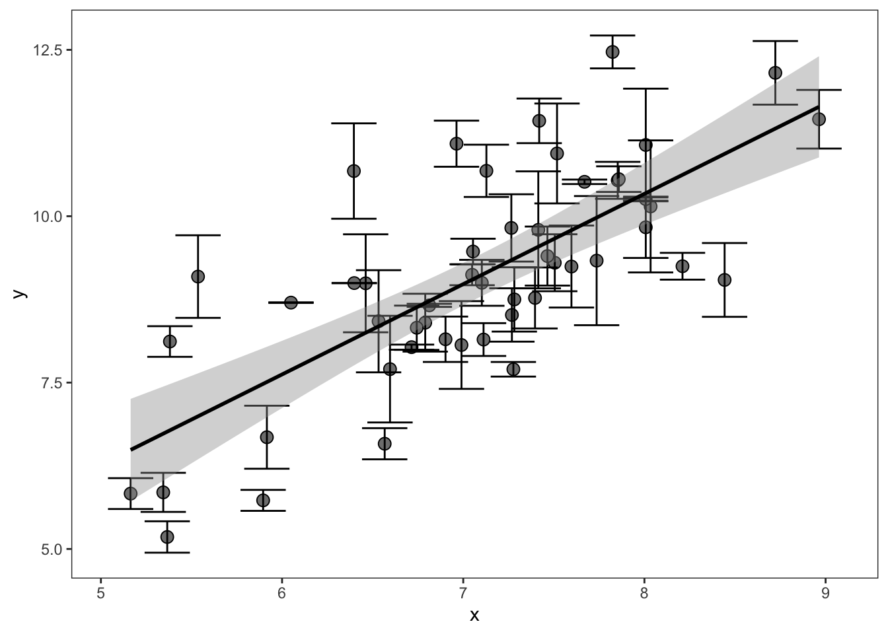
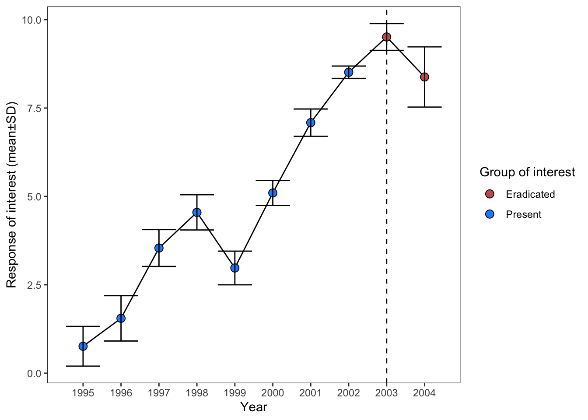
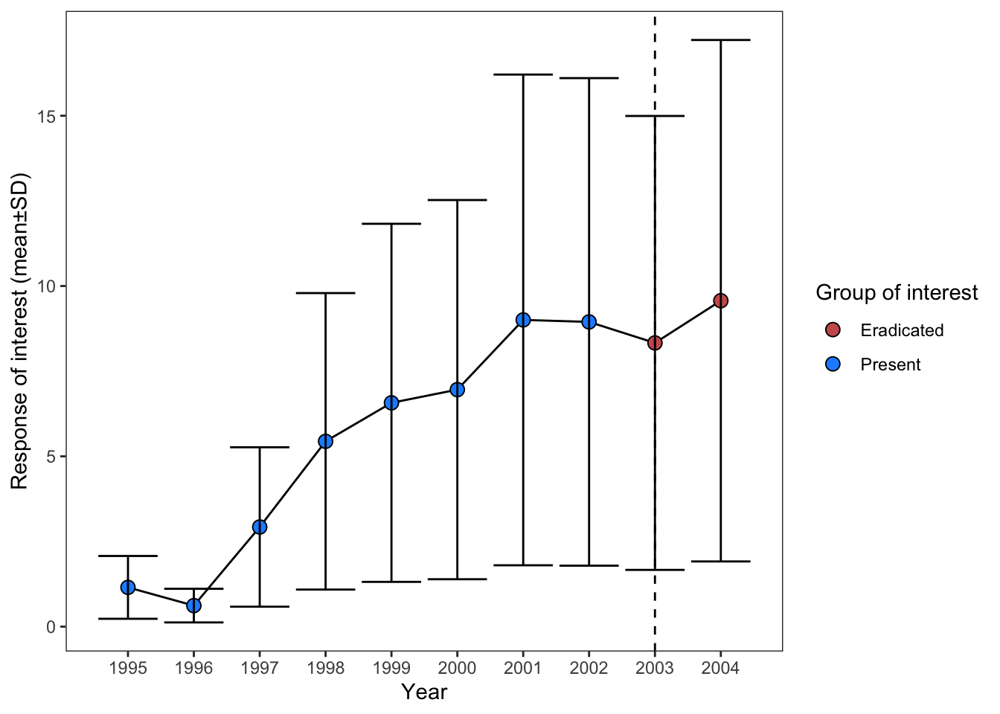

Simulating non-Gaussian data
Dark magic
The dark magic of data reconstruction
Reconstructing the underlying distributions that lurk beneath data summaries is one of the most interesting and potentially dangerous tricks in our meta-analysis toolkit. These cases are experimental and require further research yet also can do something very important: align the units of replication of the data underlying your meta-analysis.
TipKey points
- Reconstructing underlying data from summaries can align units of replication, but it rests on a distributional assumption. Check that assumption before you simulate.
- Count data are usually negative binomial or Poisson, and proportions are binomial or beta-binomial. Normal simulation is only safe when the data are roughly symmetric and the variance does not depend on the mean.
- Negative binomial data have variance greater than the mean. A standard deviation that rises with the mean alone is not enough to show this.
- All the numbers in the text come from the code on this page, so you can rerun it and check them yourself.
These tools are for figures like this, which we have already described here:
Or, like this for an SMD effect size:

If the data in these figures (underlying each point) is normally distributed you can use rnorm to simulate the original dataset based on the means, standard deviations, and sample sizes (as our code in those sections demonstrated). This allows you to calculate effect sizes on results that may otherwise be unextractable. However, this assumes that data is normally distributed, which may not be true in the case of ecological or evolutionary data.
Determining the correct distribution
To understand whether the underlying data can be drawn safely from the normal distribution, you need to think carefully about the data generating process.
- Is the data discrete, e.g., count data or abundance data?
Abundance data generally follows a negative binomial or Poisson distribution. Data bounded between 0 and 1 (e.g., cover data) follows the Beta distribution.
- What is the relationship between the means and reported error?
In normally distributed data, the coefficient of variation (\(\frac{sd}{m}\)) is usually small. The old rule of thumb was CV below 2, but it’s only a rough guide. Chapter 2.1 describes a better check (the Geary-type check). The variance (\(sd^2\)) of Poisson-type data should be equal to the mean (which is unusual). In negative binomial data, the variance should be greater than the mean.
Use these rules of thumb to help decide what distribution the underlying data is. Once you have a good idea, you then need to use distributionally specific formulas to convert the author-provided summary statistics (mean, standard deviation) to the distribution’s own parameters. For example, negative binomial uses size instead of standard deviation to describe its dispersion. Luckily, as we show below, converting standard deviation to size is possible.
Here is a table of the parameters necessary to simulate data in most distributions you’ll encounter during a meta-analysis, along with the formulas to convert standard deviation to these parameters.
| distribution | diagnosis | common applications |
|---|---|---|
| Normal | continuous; sd not related to m; CV small | Continuous measurements, e.g., biomass or body length |
| Negative binomial | count; Variance > mean | Abundance data |
| Poisson | count; Variance ≈ mean | Count data |
| Binomial | probability (0-1) across trials; \(sd \le \sqrt{m(1-m)/N}\) | success, survivorship, survival |
| Beta | proportion bounded between 0 and 1 | Cover data |
ImportantSummarizing non-independent and independent data
In several sections through this tutorial we demonstrate or allude to reconstructing underlying data behind author summaries. This can align the unit of replication of the resulting effect sizes with the rest of your dataset.
However, one should be thoughtful and careful about the non-independence structures embedded within these summaries. The resulting effect size will be based on a mixture of more and less independent data. For example, in the time series above, there are two types of non-independence: the measurements through time and the summarized measurements within each time point.
Reconstructing the underlying data with rnorm, as we demonstrated above, and then summarizing by the mean±sd of each treatment group might mix these non-independence structures.
For that reason, we suggest that data extracted like this should be tagged and that you should record whether the data was summarized across time, across spatially-independent samples (or different individuals), or across both. These factors may explain methodological heterogeneity in your dataset. Note that similar mixtures of spatially, temporally, or spatiotemporally summarized data are also likely embedded within author-reported means±sds (which we also recommend recording)
Negative binomial
We will here simulate the underlying data for negative binomial derived abundance data, as you might encounter in a time series (similar to the figure above).
The object dt here is a dataset extracted from an article with Mean±SD for two groups in a time series (similar data as in our normally distributed example here).

The data looks like this:
| status | mean | sd | N |
|---|---|---|---|
| Present | 1.1524651 | 0.9219720 | 10 |
| Present | 0.6170123 | 0.4936098 | 10 |
| Present | 2.9255908 | 2.3404726 | 10 |
| Present | 5.4405181 | 4.3524145 | 10 |
| Present | 6.5707700 | 5.2566160 | 10 |
| Present | 6.9582480 | 5.5665984 | 10 |
| Present | 9.0049238 | 7.2039390 | 10 |
| Present | 8.9468565 | 7.1574852 | 10 |
| Eradicated | 8.3295040 | 6.6636032 | 10 |
| Eradicated | 9.5688325 | 7.6550660 | 10 |
In this example, the standard deviation is 80% of the mean. You might think an SD that rises with the mean means negative binomial data. Not necessarily: the SD rises with the mean in Poisson counts too. The real signal of a negative binomial is a variance larger than the mean (\(sd^2 > m\)). Here, with \(sd = 0.8m\), the variance is \(0.64 m^2\). That is only larger than \(m\) when \(m >\) 1.56. Some years in this example fall below that value, so for those years we set the variance just above the mean (see below).
Now let’s convert the author provided sd to size, which is the parameter that describes the dispersion of the negative binomial family. This is based on the following relationship between the mean (\(m\)), variance (\(Var\)), and size (\(size\)):
\[\begin{aligned} Var = m + \frac{m^2}{size} \end{aligned}\]
Solving for size (which is the negative binomial flavor of dispersion):
\[\begin{aligned} size = \frac{m^2}{Var - m} \end{aligned}\]
Note that the variance must be greater than the mean for the negative binomial distribution. If it isn’t, the formula above gives a negative (or undefined) size. So, for any year where the variance is at or below the mean, we first raise the variance to 1% above the mean, and then calculate size.
# First, floor the variance (before calculating size) and then calculate the size dispersion parameter:
dt[, var := sd^2]
dt[var <= mean, var := mean * 1.01]
dt[, size := mean^2 / (var - mean)]
# Now expand dataset with rnbinom:
dt_expanded <- list()
for(i in 1:nrow(dt)){
dt_expanded[[i]] <- data.table(y = rnbinom(mu = dt$mean[i],
size = dt$size[i],
n = dt$N[i]),
status = dt$status[i])
}
dt_expanded <- rbindlist(dt_expanded)
# Now summarize to calculate our effect size of interest:
final_dt <- dt_expanded[, .(mean = mean(y),
sd = sd(y),
total_n = .N),
by = .(status)]
knitr::kable(final_dt)| status | mean | sd | total_n |
|---|---|---|---|
| Present | 6.0625 | 7.295471 | 80 |
| Eradicated | 10.0500 | 7.584437 | 20 |
These values can then be used to calculate your SMD / lnRoM effect size.
Poisson
The Poisson distribution has a single parameter, \(\lambda\) (lambda), which is equal to both the mean and the variance (so the standard deviation is \(\sqrt{\lambda}\)). This case is likely very unusual in most data. If your data is truly Poisson, then you’d use similar code as what we described above, except we’d draw Poisson data with the R function rpois as follows:
rpois(n = 10, lambda = 1) [1] 0 2 1 0 1 1 0 0 0 1Binomial
Some studies report mean±sd (\(m±sd\)) proportions (or probabilities) across trials/sites/islands/years. For example, the mean proportion of nests that fledged across several islands or the mean proportion of seedlings that survived across plots.
You can readily meta-analyze this data using an SMD/lnRoM type effect size with trials/sites/islands/years as the unit of replication, after transforming the mean and standard deviation (see here)
However, this type of data is naturally an lnOR type effect size, with a discrete outcome (e.g., fledged, survived) and if the rest of your dataset uses individual as the unit of replication, these effect sizes will be considerably underweighted and will be fundamentally incomparable.
However, it is possible to convert data summaries like this into the underlying binary outcomes using the binomial distribution. Here’s the setup. Each trial (a site, island, or year) has \(n\) individuals, and each individual either succeeds or fails with probability \(p\). The number of successes in one trial is a single draw from the binomial distribution, and we have \(t\) trials. (Binomial formulas usually call the number of trials \(m\), but we’ve been using \(m\) for means, so we’ll call it \(t\).)
Doing so requires that you know the number of individuals (\(n\)), e.g. total number of nests or individuals monitored. There are ways to estimate the number of individuals but doing so assumes that \(p\) is equal across all trials, which is unlikely in the real world. We also suspect that most studies present the number of individuals (though potentially across all trials and not per trial/site/etc).
You can then draw binomial data in R, with size equivalent to the number of individuals per trial and n (confusingly) equivalent to the number of trials/sites/islands. In the code below, we’re simulating data for an author-reported mean of 0.4, from 5 separate trials/sites/islands, each of which had 10 individuals:
n_individuals = 10
mean_proportion = 0.4
n_sites = 5
out <- rbinom(size = n_individuals,
p = mean_proportion,
n = n_sites)
out[1] 7 3 4 1 2Each element of the resulting vector is the number of individuals (of 10 total) that experienced the binomial outcome. We can now coerce this into a format that is compatible with calculating lnOR type effect sizes (with only one level of treatment).
You might note that the author-provided \(sd\) was ignored. This is because the binomial distribution assumes that variance is a direct result of the proportion (\(p\)) and number of individuals (\(n\)):
\[ \begin{aligned} &Var(p) = \frac{p(1-p)}{n} \\ \end{aligned} \]
For that reason, you should check whether the author-reported standard deviation is equal or less than the theoretical standard deviation of the binomial distribution. With \(\bar{p}\) as the reported mean proportion and \(n\) as the number of individuals, the theoretical \(sd_{theoretical}\) should be:
\[ \begin{aligned} sd_{theoretical} = \sqrt{\frac{\bar{p}(1-\bar{p})}{n}} \end{aligned} \]
If the reported \(sd\) is larger than this, you should use the Beta-Binomial distribution instead. Or, consider analyzing this data, and similar data, separately as an SMD type effect size with the number of trials/sites as the unit of replication.
We demonstrated similar conversions for Zr type data here.
Beta-Binomial
If the author-reported \(sd\) is larger than the theoretical binomial \(sd\), we can inject variance (\(sd^2\)) into the data generating process by using the Beta-Binomial distribution. To do so we need to calculate Beta distribution shape parameters (\(\alpha\) and \(\beta\)). The bridge between the two is \(\rho\) (“rho”), the intra-site correlation. It describes how much more alike individuals at the same site are than individuals at different sites. The more alike they are, the more extra variation there is among sites. With \(N\) individuals per site (the same as \(n\) in the binomial section above), \(m\) as the author-reported mean and \(sd\) as the author-reported standard deviation:
\[\begin{aligned} & \rho = \frac{N \, sd^2 / (m(1-m)) - 1}{N - 1}\\ & ab = \frac{1}{\rho} - 1 \\ & \alpha = m \, ab \\ & \beta = (1-m) \, ab \\ \end{aligned}\]
If \(\rho \le 0\), the reported \(sd\) is not larger than the binomial \(sd\), so the Beta-Binomial cannot be used and you should use rbinom instead. In R we’ll use the rbbinom function from the package extraDistr.
library("extraDistr")
n_individuals = 10
mean_proportion = 0.4
sd = 0.25 # must be larger than the binomial sd, sqrt(0.4 * 0.6 / 10) = 0.155
n_sites = 5
rho <- (n_individuals * sd^2 / (mean_proportion * (1 - mean_proportion)) - 1) /
(n_individuals - 1)
if (rho <= 0) {
# The reported sd is not over-dispersed relative to the binomial: use rbinom
out <- rbinom(n = n_sites, size = n_individuals, prob = mean_proportion)
} else {
ab <- 1 / rho - 1
alpha <- mean_proportion * ab
beta <- (1 - mean_proportion) * ab
out <- rbbinom(n = n_sites, size = n_individuals, alpha = alpha, beta = beta)
}
out[1] 5 6 5 4 1This vector gives the number of individuals with the outcome in each trial, while accounting for the extra variation. We can check how closely the simulation matches the author-provided mean±sd. A check with 5 sites is too noisy to be useful, so we simulate 100,000 sites:
mean sd
0.3993590 0.2494865 The simulated mean is 0.40 and the simulated standard deviation is 0.25, against the target values of 0.40 and 0.25.
See above on how to convert this into the key ingredients for an lnOR effect size calculation or see our more thoroughly worked example here.
Gamma and log-normal
For continuous, positive responses that are not normal, the gamma and log-normal distributions are common alternatives. Their parameters can be calculated from the reported mean (\(m\)) and standard deviation (\(sd\)):
- Gamma:
rgamma(n, shape = m^2/sd^2, rate = m/sd^2) - Log-normal:
sdlog <- sqrt(log(1 + sd^2/m^2)),meanlog <- log(m) - sdlog^2/2, thenrlnorm(n, meanlog, sdlog)
For proportions that are true probabilities (not counts out of a known number of individuals), use the Beta distribution. Its parameters come from the same formulas with \(N\) treated as very large, which simplifies to \(ab = m(1-m)/sd^2 - 1\).